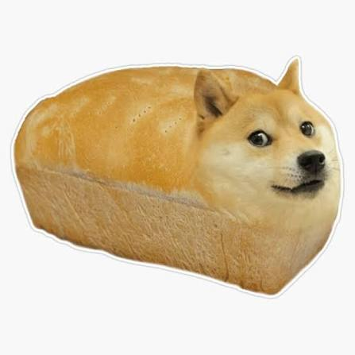
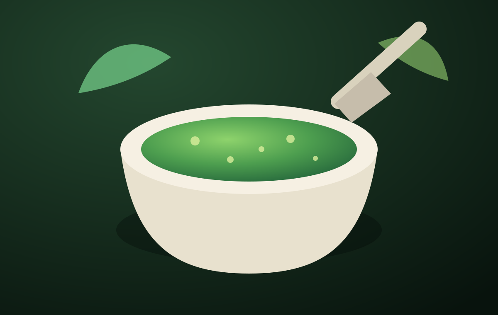
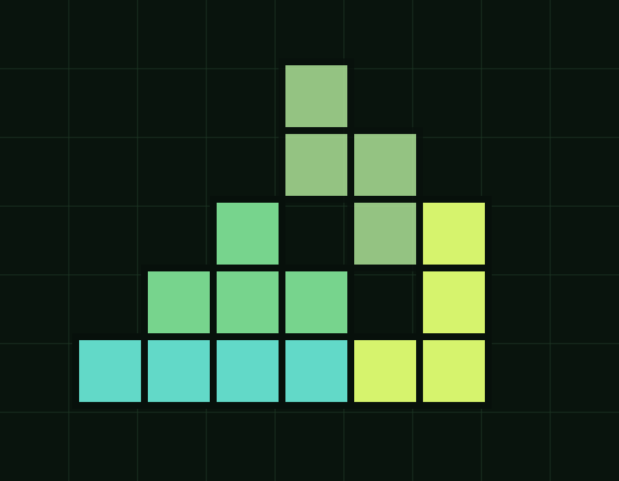
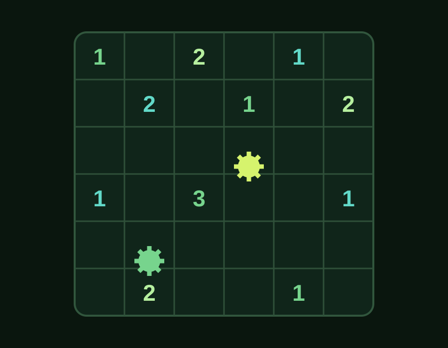
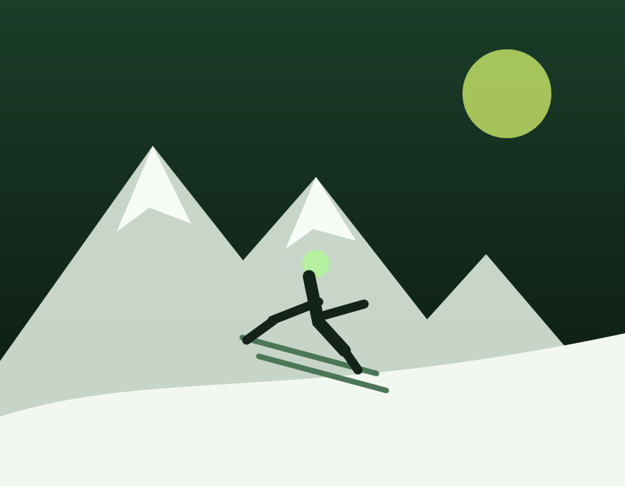
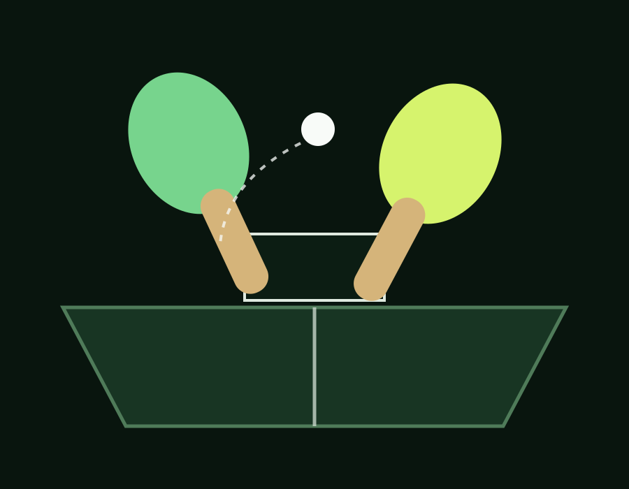
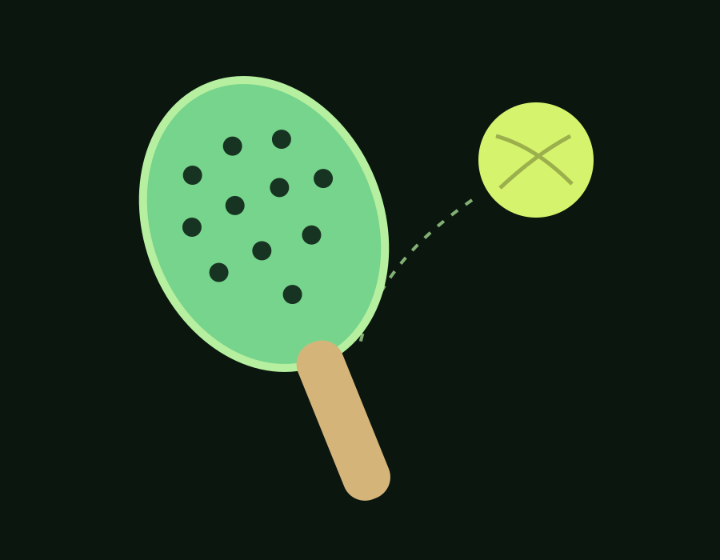

FOUNDER & CEO
Blaise N.
Computer engineering student focused on turning useful AI ideas into clear, practical improvements for real products and businesses.
AI improvement studio
Give us the problem. We define the right KPIs, improve the product or process and keep adapting the solution until it fits how your business actually works.
01$ pestoai understand ./business
02mapping goals, users and constraints…
03✓ 4 useful KPIs defined
04✓ highest-impact change prepared
Replace repeated manual steps with one clear, reviewable workflow.
Interactive demo
Three browser-only examples showing how PestoAi identifies, measures and improves a problem. Nothing is uploaded.
How we work
PestoAi is deliberately adaptable. The process stays clear even when the solution changes.
We learn the problem, the people affected and the constraints that cannot be ignored.
We agree how success will be measured before changing the product, workflow or codebase.
We implement the highest-value change, measure it and adapt the next step to the evidence.
The team
Direct access to the people shaping the product, with specialist support added when the problem calls for it.
FOUNDER & CEO
Computer engineering student focused on turning useful AI ideas into clear, practical improvements for real products and businesses.

TECHNICAL & STRATEGIC ADVISER
Computer engineering graduate with more than three years of industry experience, advising PestoAi on technical direction, delivery and product decisions.
Things we like
Pesto inspired the name: easy to make, surprisingly hard to make properly. We think useful AI is much the same.

Simple ingredients, balanced properly. Our metaphor for AI: easy to attempt, difficult to get exactly right.

Clear rules. Endless possibilities.

Good decisions from incomplete information.

Momentum, judgement and clean lines.

Fast feedback and small adjustments.

Simple to begin, hard to master.
Send us the problem
Send a public website, GitHub or GitLab link, or describe a private codebase. We will review the information and get back in touch about the most useful next step.
Join us
We are interested in motivated people who can help us make AI more useful, measurable and properly adapted to the people using it. Technical, commercial, design and operational perspectives are all welcome.